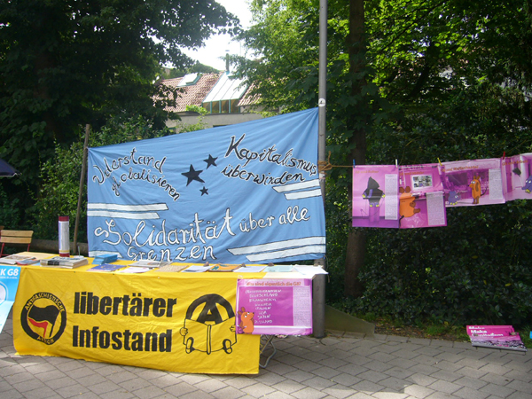

Am 20.06.2007 fanden sich über 30 Besucher zur Vortragsveranstaltung des BgR Aschaffenburg „Neonazis und die soziale Frage“ im Café Schwarzer Riese ein, das Programm wurde kurzfristig noch um einen Mobilisierungs-/Infoblock bezüglich des Neonaziaufmarschs am 07.07. in Frankfurt ergänzt. Den ersten Teil der Veranstaltung gestaltete Christoph Kopke, Moses Mendelssohn Zentrum für europäisch-jüdische Studien, Universität Potsdam. Inhaltlich drehte sich der Vortrag um die Geschichte der NPD und ihrem Wandel von der „Altnazi“-Partei hin zur Öffnung zum Spektrum der freien Kameradschaften, die vermeintliche Kapitalismuskritik (a lá Weltverschwörung der Juden von der Ostküste) und die freien Kameradschaften an sich. Anschließend präsentierten Frankfurter Antifas das Konzept zur Verhinderung des Naziaufmarschs am 07.07. in Frankfurt, Infos dazu gibt es hier. Abgeschlossen wurde der Abend durch eine Diskussion zu verschiedenen Aspekten und Zielen der Politik der NPD.
Eine Woche darauf, am 25.06.2007, hatte das Bündnis „Odenwald gegen Rechts“ nach Mömlingen geladen, Titel der Veranstaltung lautete „Neofaschismus heute“, der Referent war Michael Weis vom apabiz aus Berlin. Auch hier versammelten sich über 30 Besucher und Informierten sich über die neuesten Entwicklungen in der Neonaziszene, wobei auch die Ereignisse in Mömlingen und Umgebung in den Vortrag mit eingebaut wurden, stehen sie doch exemplarisch für das Verhalten und die Strategie von Neonazis. Nach dem Vortrag wurden Gründe für die Entwicklung der Neonaziszene in Mömlingen und Gegenmaßnahmen diskutiert.
Falls ihr euch jetzt ärgert eine der Veranstaltungen verpasst zu haben, dann schaut öfter mal hier vorbei, unter der Rubrik Termine gibts immer einen Überblick regionaler Veranstaltungen – oder schreibt euch in unseren Newsletter ein.
Es wird natürlich weiterhin Veranstaltungen und Aktionen zu diesem Thema geben – denn ihre Ruhe wird den Nazis garantiert nicht gelassen. Seid dabei, Informiert euch und andere und werdet aktiv! What we can do
Archiv für Juni 2007
Die Zeit um die Gipfelproteste um Heiligendamm war geprägt von einem Medienhype, der uns die fantastischsten Dinge vermitteln sollte. Clowns griffen angeblich PolizistInnen mit Säure und Einwegspritzen an, der ominöse schwarze Block tauchte zufällig immer dann auf, wenn die Bullen prügelten und Menschen bewaffneten sich mit Mollies und Wurfgeschossen, die mit Rasierklingen und Nägeln gespickt waren, hieß es. Der Medienmaschinerie ist nichts zu schade, um den legitimen Widerstand gegen die Politik der G8 zu diffamieren. Hier eine Sammlung einiger Lügen, die den Weg in die Medien fanden oder dort entstanden.[mehr]>>

Abakuz e.V. veranstaltete am 26.6.2007 am Eingang zum Schönthal-Park/CityGalerie einen Infostand zum Thema G8 & Globalisierungskritik. Bei sonnigem Wetter wurde mit vielen Plakaten und Transparenten die Aufmerksamkeit auf den Stand gelenkt, an dem umfangreiche Materialien zu den bevorstehenden Gipfelprotesten und Globalisierungskritik im Allgemeinen unter die Menschen gebracht wurden. Einen kurze Ankündigung über den Infostand aus dem Main-Echo wollen wir euch nicht vorenthalten:
Aschaffenburg. Protest gegen Globalisierung
Einen Informationsstand zum bevorstehenden G8-Gipfel und zur Globalisierung gibt es am Samstag, 26. Mai, in der Herstallstraße. Ab 10 Uhr sind, vom Verein Abakuz organisiert, Infomaterial und Plakate rund um das Thema »Kapitalistische Globalisierung und deren Auswirkungen« erhältlich. Bei den Protesten gegen G8, so Abakuz, gehe es um den symbolischen Gehalt dieses Gipfeltreffens. Es seien viele, die sich gegen die von der G8 verfolgte Politik der Ausbeutung und Unterdrückung zur Wehr setzten. Wer sich den Gipfel einlade, bekomme den geballten Protest der globalisierungskritischen und antikapitalistischen Bewegung zu spüren. Bis zu 100000 Menschen würden zur Großdemonstration am 2. Juni in Rostock erwartet.
Am 26.6.2007 veranstaltete das Bündnis „Odenwald gegen Rechts“ zusammen mit DGB und Jusos einen „Tag gegen Rechts“ mit Infoständen vor dem Mömlinger Rathaus. Im Vorfeld kam es zu Androhungen von Gewalt durch Neonazis, aber das blieb heiße Luft, der Tag verlief für die Veranstalter zufriedenstellend.
Im folgenden noch der Auszug aus einer Pressemitteilung des DGB Südhessen:
Neonazis aus Mömlingen fotografieren Mitglieder von „Odenwald gegen rechts“ -
DGB stellt StrafanzeigeMICHELSTADT / MÖMLINGEN. Neonazis aus Mömlingen haben in einer Michelstädter Gaststätte die Teilnehmerinnen und Teilnehmer des Bündnisses „Odenwald gegen rechts“ mit einem Foto-Handy fotografiert. Die Neonazis sind dann sofort geflüchtet, wurden aber verfolgt. Die Personen können eindeutig der rechtsextremen Szene in Mömlingen zugeordnet werden.
Horst Raupp (Darmstadt), Gewerkschaftssekretär der DGB-Region Südhessen, hat bei der Kriminalpolizei und der Staatsanwaltschaft in Aschaffenburg gegen die drei beteiligten Personen aus Mömlingen Strafanzeige gestellt. Der DGB geht von einer konkreten Bedrohungssituation aus. In Mömlingen wurden wiederholt engagierte antifaschistische Bürger und Jugendliche von Neonazis bedroht und angegriffen. Die Übergriffe reichen von massiven Drohungen über das Aufschlitzen von Reifen bis hin zu massiven körperlichen Angriffen. Bereits mehrfach wurden Nazi-Gegner in Mömlingen von Neonazis überfallen und zusammengeschlagen. […]